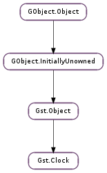

| Subclasses: | Gst.SystemClock, GstCheck.TestClock |
|---|
| static | id_compare_func(id1, id2) |
| static | id_get_time(id) |
| static | id_ref(id) |
| static | id_unref(id) |
| static | id_unschedule(id) |
| static | id_wait(id) |
| static | id_wait_async(id, func, *user_data) |
| add_observation(slave, master) | |
| adjust_unlocked(internal) | |
| get_calibration() | |
| get_internal_time() | |
| get_master() | |
| get_resolution() | |
| get_time() | |
| get_timeout() | |
| new_periodic_id(start_time, interval) | |
| new_single_shot_id(time) | |
| periodic_id_reinit(id, start_time, interval) | |
| set_calibration(internal, external, rate_num, rate_denom) | |
| set_master(master) | |
| set_resolution(resolution) | |
| set_timeout(timeout) | |
| single_shot_id_reinit(id, time) | |
| unadjust_unlocked(external) |
| Name | Type | Flags | Description |
|---|---|---|---|
| timeout | int | r/w | The amount of time, in nanoseconds, to sample master and slave clocks |
| window-size | int | r/w | The size of the window used to calculate rate and offset |
| window-threshold | int | r/w | The threshold to start calculating rate and offset |
None
| Name | Type | Access |
|---|---|---|
| object | Gst.Object | r |
Bases: Gst.Object
GStreamer uses a global clock to synchronize the plugins in a pipeline. Different clock implementations are possible by implementing this abstract base class or, more conveniently, by subclassing Gst.SystemClock.
The Gst.Clock returns a monotonically increasing time with the method Gst.Clock.get_time (). Its accuracy and base time depend on the specific clock implementation but time is always expressed in nanoseconds. Since the baseline of the clock is undefined, the clock time returned is not meaningful in itself, what matters are the deltas between two clock times. The time returned by a clock is called the absolute time.
The pipeline uses the clock to calculate the running time. Usually all renderers synchronize to the global clock using the buffer timestamps, the newsegment events and the element’s base time, see Gst.Pipeline.
A clock implementation can support periodic and single shot clock notifications both synchronous and asynchronous.
One first needs to create a Gst.ClockID for the periodic or single shot notification using Gst.Clock.new_single_shot_id () or Gst.Clock.new_periodic_id ().
To perform a blocking wait for the specific time of the Gst.ClockID use the Gst.Clock.id_wait (). To receive a callback when the specific time is reached in the clock use Gst.Clock.id_wait_async (). Both these calls can be interrupted with the Gst.Clock.id_unschedule () call. If the blocking wait is unscheduled a return value of Gst.ClockReturn.UNSCHEDULED is returned.
Periodic callbacks scheduled async will be repeatedly called automatically until it is unscheduled. To schedule a sync periodic callback, Gst.Clock.id_wait () should be called repeatedly.
The async callbacks can happen from any thread, either provided by the core or from a streaming thread. The application should be prepared for this.
A Gst.ClockID that has been unscheduled cannot be used again for any wait operation, a new Gst.ClockID should be created and the old unscheduled one should be destroyed with Gst.Clock.id_unref ().
It is possible to perform a blocking wait on the same Gst.ClockID from multiple threads. However, registering the same Gst.ClockID for multiple async notifications is not possible, the callback will only be called for the thread registering the entry last.
None of the wait operations unref the Gst.ClockID, the owner is responsible for unreffing the ids itself. This holds for both periodic and single shot notifications. The reason being that the owner of the Gst.ClockID has to keep a handle to the Gst.ClockID to unblock the wait on FLUSHING events or state changes and if the entry would be unreffed automatically, the handle might become invalid without any notification.
These clock operations do not operate on the running time, so the callbacks will also occur when not in PLAYING state as if the clock just keeps on running. Some clocks however do not progress when the element that provided the clock is not PLAYING.
When a clock has the Gst.ClockFlags.CAN_SET_MASTER flag set, it can be slaved to another Gst.Clock with the Gst.Clock.set_master (). The clock will then automatically be synchronized to this master clock by repeatedly sampling the master clock and the slave clock and recalibrating the slave clock with Gst.Clock.set_calibration (). This feature is mostly useful for plugins that have an internal clock but must operate with another clock selected by the Gst.Pipeline. They can track the offset and rate difference of their internal clock relative to the master clock by using the Gst.Clock.get_calibration () function.
The master/slave synchronisation can be tuned with the Gst.Clock :timeout, Gst.Clock :window-size and Gst.Clock :window-threshold properties. The Gst.Clock :timeout property defines the interval to sample the master clock and run the calibration functions. Gst.Clock :window-size defines the number of samples to use when calibrating and Gst.Clock :window-threshold defines the minimum number of samples before the calibration is performed.
Last reviewed on 2012-03-28 (0.11.3)
| Parameters: |
|
|---|---|
| Returns: | negative value if a < b; zero if a = b; positive value if a > b MT safe. |
| Return type: |
Compares the two Gst.ClockID instances. This function can be used as a GLib.CompareFunc when sorting ids.
| Parameters: | id (object) – The Gst.ClockID to query |
|---|---|
| Returns: | the time of the given clock id. MT safe. |
| Return type: | int |
Get the time of the clock ID
| Parameters: | id (object) – The Gst.ClockID to ref |
|---|---|
| Returns: | The same Gst.ClockID with increased refcount. MT safe. |
| Return type: | int |
Increase the refcount of given id.
| Parameters: | id (object) – The Gst.ClockID to unref |
|---|
Unref given id. When the refcount reaches 0 the Gst.ClockID will be freed.
MT safe.
| Parameters: | id (object) – The id to unschedule |
|---|
Cancel an outstanding request with id. This can either be an outstanding async notification or a pending sync notification. After this call, id cannot be used anymore to receive sync or async notifications, you need to create a new Gst.ClockID.
MT safe.
| Parameters: | id (object) – The Gst.ClockID to wait on |
|---|---|
| Returns: | the result of the blocking wait. Gst.ClockReturn.EARLY will be returned if the current clock time is past the time of id, Gst.ClockReturn.OK if id was scheduled in time. Gst.ClockReturn.UNSCHEDULED if id was unscheduled with Gst.Clock.id_unschedule (). MT safe. |
| Return type: | Gst.ClockReturn, jitter: int |
Perform a blocking wait on id. id should have been created with Gst.Clock.new_single_shot_id () or Gst.Clock.new_periodic_id () and should not have been unscheduled with a call to Gst.Clock.id_unschedule ().
If the jitter argument is not None and this function returns Gst.ClockReturn.OK or Gst.ClockReturn.EARLY, it will contain the difference against the clock and the time of id when this method was called. Positive values indicate how late id was relative to the clock (in which case this function will return Gst.ClockReturn.EARLY ). Negative values indicate how much time was spent waiting on the clock before this function returned.
| Parameters: |
|
|---|---|
| Returns: | the result of the non blocking wait. MT safe. |
| Return type: |
Register a callback on the given Gst.ClockID id with the given function and user_data. When passing a Gst.ClockID with an invalid time to this function, the callback will be called immediately with a time set to Gst.CLOCK_TIME_NONE. The callback will be called when the time of id has been reached.
The callback func can be invoked from any thread, either provided by the core or from a streaming thread. The application should be prepared for this.
| Parameters: | |
|---|---|
| Returns: | True if enough observations were added to run the regression algorithm. MT safe. |
| Return type: | bool, r_squared: float |
The time master of the master clock and the time slave of the slave clock are added to the list of observations. If enough observations are available, a linear regression algorithm is run on the observations and clock is recalibrated.
If this functions returns True, r_squared will contain the correlation coefficient of the interpolation. A value of 1.0 means a perfect regression was performed. This value can be used to control the sampling frequency of the master and slave clocks.
| Parameters: | internal (int) – a clock time |
|---|---|
| Returns: | the converted time of the clock. |
| Return type: | int |
Converts the given internal clock time to the external time, adjusting for the rate and reference time set with Gst.Clock.set_calibration () and making sure that the returned time is increasing. This function should be called with the clock’s OBJECT_LOCK held and is mainly used by clock subclasses.
This function is the reverse of Gst.Clock.unadjust_unlocked ().
| Return type: | internal: int, external: int, rate_num: int, rate_denom: int |
|---|
Gets the internal rate and reference time of clock. See Gst.Clock.set_calibration () for more information.
internal, external, rate_num, and rate_denom can be left None if the caller is not interested in the values.
MT safe.
| Returns: | the internal time of the clock. Or Gst.CLOCK_TIME_NONE when given invalid input. MT safe. |
|---|---|
| Return type: | int |
Gets the current internal time of the given clock. The time is returned unadjusted for the offset and the rate.
| Returns: | a master Gst.Clock or None when this clock is not slaved to a master clock. Unref after usage. MT safe. |
|---|---|
| Return type: | Gst.Clock |
Get the master clock that clock is slaved to or None when the clock is not slaved to any master clock.
| Returns: | the resolution of the clock in units of Gst.ClockTime. MT safe. |
|---|---|
| Return type: | int |
Get the accuracy of the clock. The accuracy of the clock is the granularity of the values returned by Gst.Clock.get_time ().
| Returns: | the time of the clock. Or Gst.CLOCK_TIME_NONE when given invalid input. MT safe. |
|---|---|
| Return type: | int |
Gets the current time of the given clock. The time is always monotonically increasing and adjusted according to the current offset and rate.
| Returns: | the interval between samples. |
|---|---|
| Return type: | int |
Get the amount of time that master and slave clocks are sampled.
| Parameters: | |
|---|---|
| Returns: | a Gst.ClockID that can be used to request the time notification. MT safe. |
| Return type: |
Get an ID from clock to trigger a periodic notification. The periodic notifications will start at time start_time and will then be fired with the given interval. id should be unreffed after usage.
Free-function: Gst.Clock.id_unref
| Parameters: | time (int) – the requested time |
|---|---|
| Returns: | a Gst.ClockID that can be used to request the time notification. MT safe. |
| Return type: | int |
Get a Gst.ClockID from clock to trigger a single shot notification at the requested time. The single shot id should be unreffed after usage.
Free-function: Gst.Clock.id_unref
| Parameters: | |
|---|---|
| Returns: | True if the Gst.ClockID could be reinitialized to the provided time, else False. |
| Return type: |
Reinitializes the provided periodic id to the provided start time and interval. Does not modify the reference count.
| Parameters: |
|---|
Adjusts the rate and time of clock. A rate of 1/1 is the normal speed of the clock. Values bigger than 1/1 make the clock go faster.
internal and external are calibration parameters that arrange that Gst.Clock.get_time () should have been external at internal time internal. This internal time should not be in the future; that is, it should be less than the value of Gst.Clock.get_internal_time () when this function is called.
Subsequent calls to Gst.Clock.get_time () will return clock times computed as follows:
time = (internal_time - internal) * rate_num / rate_denom + external
This formula is implemented in Gst.Clock.adjust_unlocked (). Of course, it tries to do the integer arithmetic as precisely as possible.
Note that Gst.Clock.get_time () always returns increasing values so when you move the clock backwards, Gst.Clock.get_time () will report the previous value until the clock catches up.
MT safe.
| Parameters: | master (Gst.Clock or None) – a master Gst.Clock |
|---|---|
| Returns: | True if the clock is capable of being slaved to a master clock. Trying to set a master on a clock without the Gst.ClockFlags.CAN_SET_MASTER flag will make this function return False. MT safe. |
| Return type: | bool |
Set master as the master clock for clock. clock will be automatically calibrated so that Gst.Clock.get_time () reports the same time as the master clock.
A clock provider that slaves its clock to a master can get the current calibration values with Gst.Clock.get_calibration ().
master can be None in which case clock will not be slaved anymore. It will however keep reporting its time adjusted with the last configured rate and time offsets.
| Parameters: | resolution (int) – The resolution to set |
|---|---|
| Returns: | the new resolution of the clock. |
| Return type: | int |
Set the accuracy of the clock. Some clocks have the possibility to operate with different accuracy at the expense of more resource usage. There is normally no need to change the default resolution of a clock. The resolution of a clock can only be changed if the clock has the Gst.ClockFlags.CAN_SET_RESOLUTION flag set.
| Parameters: | timeout (int) – a timeout |
|---|
Set the amount of time, in nanoseconds, to sample master and slave clocks
| Parameters: |
|
|---|---|
| Returns: | True if the Gst.ClockID could be reinitialized to the provided time, else False. |
| Return type: |
Reinitializes the provided single shot id to the provided time. Does not modify the reference count.
| Parameters: | external (int) – an external clock time |
|---|---|
| Returns: | the internal time of the clock corresponding to external. |
| Return type: | int |
Converts the given external clock time to the internal time of clock, using the rate and reference time set with Gst.Clock.set_calibration (). This function should be called with the clock’s OBJECT_LOCK held and is mainly used by clock subclasses.
This function is the reverse of Gst.Clock.adjust_unlocked ().